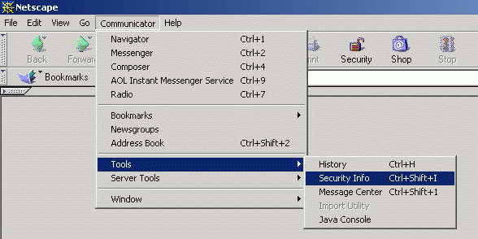
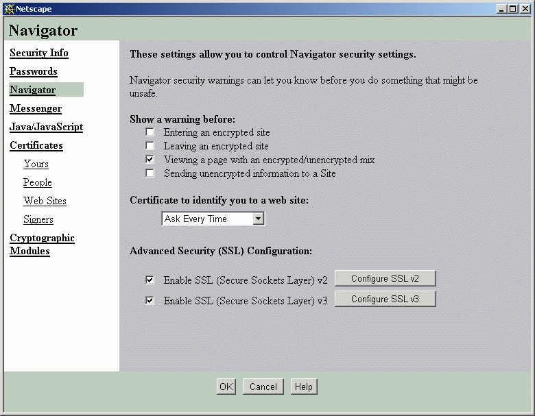

- Is it secure to send my compant's information to COMIS?
Your company information is protected by your unique user name and password
which are used to identify your company each time you log in to COMIS.During
and after your login ,all data send to/from COMIS are encrypted with 123-bit
encryption; and the system id protected by firewalls .An automatic'time-out'feature id activated after login.If there id no activjity after a
predefined period of time , the session will be automatically terminated to prevent
unauthorized access.Security is a joint effort .Yon should note the following all times to help ensure
security is not compromised;
- Do not disclose your password
- Do not share your user name and password with others
- Avoid using the same user name and password to access other Internet
services- Select a password that cannot be easily guessed
- The password should be a combination of numbers and letters with upper
and lower case- Change your password regularly
- How can I enable SSl for my computer?
Steps to enable SSlL for Netscape Communicator 4.79;
- Select"Communicator "from the Menu bar,
- Select "Tools",
- Select"Security Information",

- Select "Navigator",
- Go to "Advanced Security(SSL) Configuration"section and click "Enable SSl
(Secure Sockets Layer )v2"and "Enable SSL (Secure Sockets Layer )v3"
check box and
- Click "OK"to exit the dialog box.